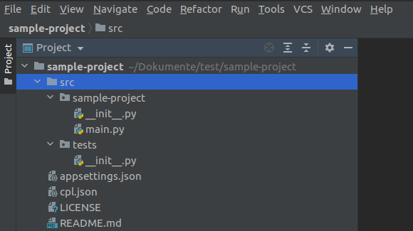
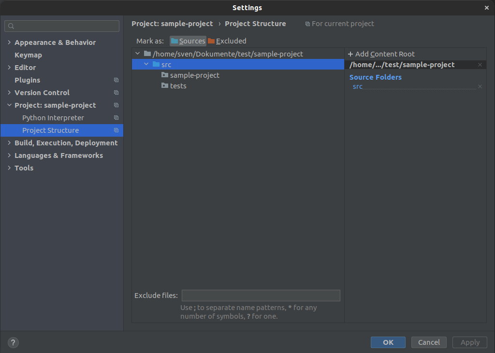
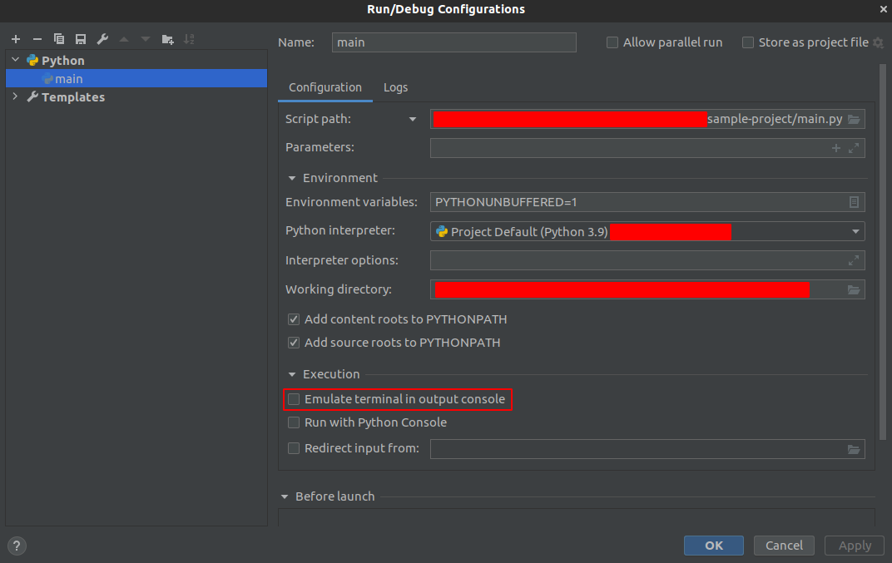

Getting started with CPL¶
Welcome to CPL!
This tutorial introduces you to the essentials of the CPL package by walking through building an console based app.
Table of Contents¶
Prerequisites¶
To get most out of this tutorial you should already have a basic understanding of the following.
Also you need to have the following installed.
Create the project¶
To create the sample project to the following:
Open a terminal
Run
cpl new console sample-project
We don’t want to use Application base or Dependency injection:
Do you want to use application base? (y/n) n Do you want to use service providing? (y/n) n
The ouput should look like this:
Creating sample-project/LICENSE done Creating sample-project/README.md done Creating sample-project/src/tests/__init__.py done Creating sample-project/appsettings.json done Creating sample-project/src/sample-project/__init__.py done Creating sample-project/src/sample-projectmain.py done
Open the project with an IDE like VS Code or PyCharm

Set the ‘src’ directory as source folder

Run the application
You should see an output like:
Hello World
In PyCharm you have to enable
Emulate terminal in output console!
What’s next¶
In this section, you’ve created an application that uses user input to generate a password.
To continue exploring CPL and developing applications: